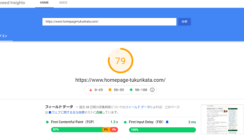

Core Web Vitals（コアウェブバイタル）とは？
サイトのユーザー体験の良しあしを測定する指標にWeb Vitals（ウェブバイタル）があります。
「Vital」は生命のという意味ですが、転じて命に関わるぐらい不可欠なという意味があります。ウェブバイタルは、サイト上で優れたユーザーエクスペリエンスを提供するのに不可欠な指標になるため、スコアをチェックして改善していくとよいでしょう。
具体的には、「ページの読み込み速度」や「クリックしたときの応答の速さ」、あるいは「広告表示などでコンテンツがずれないか」など様々な指標があり、その品質を数値で測定することができます。

この数値はPageSpeed InsightsやChromeデベロッパーツールのLighthouseなどでチェックできますが、測定結果には改善点なども表示されるため、そちらを参考にしながら修正していくことをおすすめします。
これらウェブバイタルの数値を改善することでユーザー満足度が高くなるため、結果として、ページビューの増加や滞在時間が長くなるメリットが期待できます。当サイトの場合、ウェブバイタルに注力してからセッションが4％程度増加しました。
加えて、今後は検索エンジンのランキング要素にも組み込まれるため、SEO対策上のメリットも期待できます。
ウェブバイタルのなかでも、コアになる主要なCore Web Vitals（コアウェブバイタル）については特に重要な指標になるため、こちらの方を重点的にチェックしていくとよいでしょう。
Core Web Vitalsの改善方法
コアウェブバイタルには、以下の３つの指標があります。
- LCP（Largest Contentful Paint） → ページの読み込みスピード
- CLS（Cumulative Layout Shift） → ページ表示の安定性
- FID（First Input Delay） → クリックした際などの応答性
感覚的には、ページにアクセスした際にパッと表示され、ぶれずにビシッと表示され、クリックなどにもパパっと反応する、そのようなイメージになるかと思います。
ただし、サードパーティーの広告スクリプトなども影響してくるため、まずは広告の掲載していない状態でチェックしてみることをおすすめします。
LCPについて ─ 「2.5 秒以下」が良好
LCPは、ビューポート内で表示される最大の画像、またはテキスト段落のレンダリングが完了するまでの時間のことです。この「ビューポート内」というのは、サイトにアクセスした際、スクロールせずに見える表示領域（ファーストビュー）のことを指しています。
つまり、サイトにアクセスして最初に表示される画面で、一番大きな（Largest）メインコンテンツ（Contentful）が表示（Paint）されるまでの時間が長いか、短いかの時間の指標になります。
例えば、このページの場合、ファーストビューでの一番大きなコンテンツは以下の画像になります。
あなたがこのページにアクセスした際、この画像が表示されたかと思いますが、この表示が完了するまでの時間（LCP）が「1.3秒」になります。ブログなどの場合、画像ではなく、テキストの段落の要素が一番大きなコンテンツになるかもしれません。
一般的に、このLCPは「2.5 秒以下」が良好とされているため、このページの「1.3秒」はまずまず良好といえるかもしれません。これが「4秒」ぐらいかかってしまうと、主要なコンテンツが表示されるのに時間がかかってしまい、なかなか読み始めることができず、ユーザー体験の満足度が低下してしまうことになります。
この読み込みスピードの「LCP」については、画像の容量を削減したり、WEBフォントをサブセット化するなどしてダウンロードサイズを削減すれば、読み込み時間が速くなるはずでです。
あるいは、ブラウザがキャッシュを保持する期間を長くして対応するとよいでしょう。
そのほか、CSSをMinify化して容量を圧縮する方法もありますが、そもそもCSSの容量自体が少ないため、メンテナンス性を悪くしてまで削減する意味はないかもしれません。
ただ、リソースのロード時間については、最終的には利用しているレンタルサーバーのスペックによるかと思います。レンタルサーバーを比較して、ワンランク上のサーバーへの引越も検討されてみることをおすすめします。
CLSについて ─ 「0.1以下」が良好
CLSは、最初にコンテンツが表示されてからレンダリングが完了するまでに、レイアウトがどれだけ動いてシフトしたかをチェックする指標です。
例えば、本文を読み始めていたものの、ヘッダー部分に巨大な広告が表示されて下の方に移動してしまい、スクロールする羽目になった経験があるかと思います。特に、リンクをクリックしようとしたときに下に動いてしまい、違うリンクをクリックしてしまったような場合、ユーザーエクスペリエンスが低下してしまいます。
そのため、だるまさん転んだみたいな、動いたらダメという指標になりますが、どれだけ動いたのかをCLSで測定します。
こちらのCumulative Layout Shift (CLS)のページに計算式がありますが、小さな範囲がほんの少しだけ動いた場合はスコアは小さくなり、それほど影響はありません。一方、ページ全体が大幅に動いた場合はスコアが大きくなり、改善が必要になります。
例えば、動きのあった可視領域が75％だったとして、25％下に動いた場合、レイアウトシフトスコアは「0.75 × 0.25 = 0.1875」となります。一方、大幅に80％動いた場合は「0.6」となり、動いた距離や範囲が大きければ、スコアが大きくなります。
この個々のレイアウトシフトスコアを累積したもの（Cumulative）が「Cumulative Layout Shift」となり、つまりCLSになりますが、この数値は「0.1」以下が良好とされています。上記のLCPはファーストビューのみでしたが、こちらのCLSについては時間の経過とともに累積したものである点で違いがあります。
ただし、以前までは単純に合計していたものが、セッションごとに計算するなど、仕様や計算方法については変更されています。最新の情報については、上記のページで確認されることをおすすめします。
このCLSの改善方法については、画像にwidthやheight属性を記載するなどして対応するしかないかもしれません。もしくは、広告の影響などもチェックしてみることをおすすめします。
FIDについて ─ 「100 ミリ秒以下」が良好
FIDについては、訪問者がクリックやタップをした際、ブラウザが応答するまでの時間です。反応が遅いサイトの場合、ユーザーエクスペリエンスが低下するため、速度がはやい方が満足度が高くなります。
このFIDについては、「100 ミリ秒以下」が良好とされています。
ただし、当サイト運営者の印象では、「FID」や「CLS」については対応できることが限られていると感じています。当サイトでは特に何もしていませんが、「FID」や「CLS」については問題がないと感じています。
ちなみに、各ページをひとつづつチェックしていくのは大変かと思いますので、「Search Console」で確認すると便利です。エクスペリエンスの「ウェブに関する主な指標」の箇所から「レポートを開く」を選択し、「不良」や「改善が必要」などのページがあれば、修正していくことをおすすめします。
ただし、上記のPageSpeed InsightsやLighthouseなどの測定結果とは違い、こちらのSearch Consoleでは具体的な参考情報は表示されないため、問題のあるページで個別にLighthouseなどを実行して修正していくとよいでしょう。